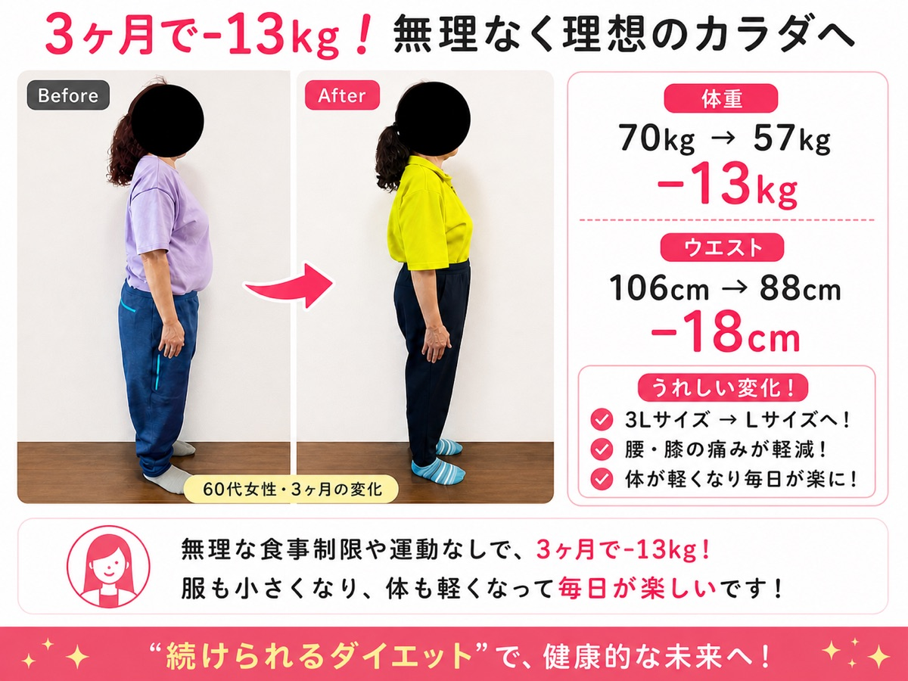
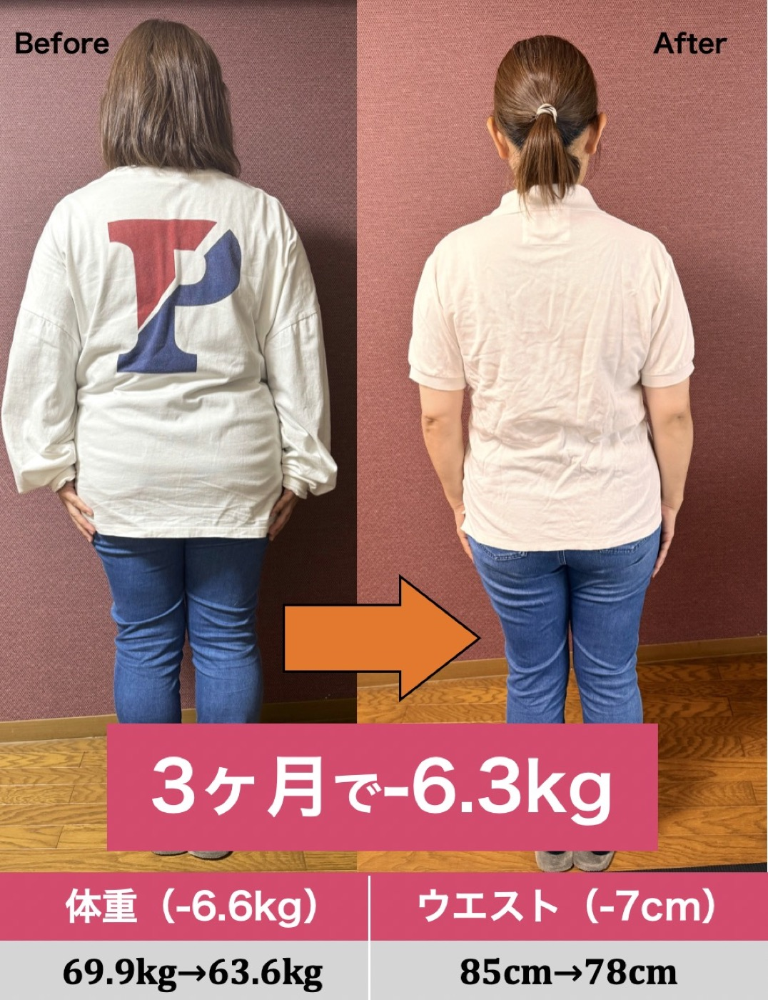

今だけ無料公開中
まずは7日間、
あなたの体を責めないダイエットへ。
LINE登録後、講座内容を順番にお届けします。いつでも解除できます。
無料LINE講座を受け取る 効果には個人差があります。本講座は健康的な生活習慣づくりを目的としており、医療行為ではありません。明石市 整体院誠天 監修
何度も頑張って、痩せては戻る。そのリバウンドの連鎖を断ち切るために、年齢で変わった体を整体視点で整える7日間の無料LINE講座。
通常29,800円相当の内容を期間限定で公開中
FOR YOU
40代以降のダイエットは、単に食べる量を減らすだけでは続きません。ホルモンバランス、筋肉量、姿勢、睡眠、冷えやむくみ。複数の変化を見ながら、無理なく続く方法に切り替えることが大切です。
WHY
年齢とともに変わる体の仕組みに、方法が合っていないだけかもしれません。

更年期前後は体調や脂肪のつき方が変わりやすい時期。短期集中の我慢より、体調を崩さない設計が重要です。

筋肉量が落ちると、同じ食事でも体型が変わりやすくなります。小さな筋肉刺激を日常に入れていきます。

ぽっこりお腹は脂肪だけでなく、姿勢や呼吸の浅さが関係することも。整体視点で土台から整えます。


METHOD
冷え、むくみ、呼吸の浅さをケアし、体が動き出しやすい状態をつくります。
骨盤まわりと背中をゆるめ、見た目の印象に出やすいお腹まわりへアプローチします。
食事を禁止するのではなく、選び方とタイミングを調整。生活の中で続く形に落とし込みます。
FREE PROGRAM
毎日届く短いレッスンで、今の体に合うダイエットの考え方とセルフケアを学べます。
VOICE
「食べない方法しか知らなかったので、体を整える考え方が新鮮でした。」
48歳・主婦
「短い動画なので、仕事終わりでも続けやすいです。姿勢を見る癖がつきました。」
52歳・会社員
「年齢のせいと諦めていましたが、できることがあるとわかって前向きになれました。」
45歳・パート勤務
SUPERVISOR
現場で多くの女性の体と向き合ってきた整体院の視点から、40代・50代が無理なく始められる内容にまとめました。体重だけを追いかけるのではなく、姿勢、巡り、生活習慣を一緒に整えることを大切にしています。
今だけ無料公開中
LINE登録後、講座内容を順番にお届けします。いつでも解除できます。
無料LINE講座を受け取る 効果には個人差があります。本講座は健康的な生活習慣づくりを目的としており、医療行為ではありません。